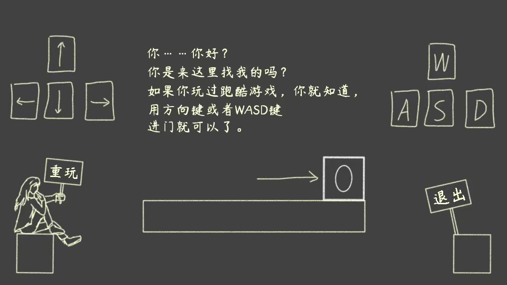
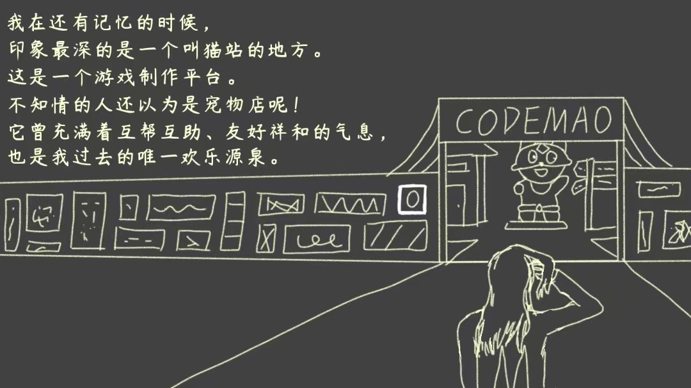
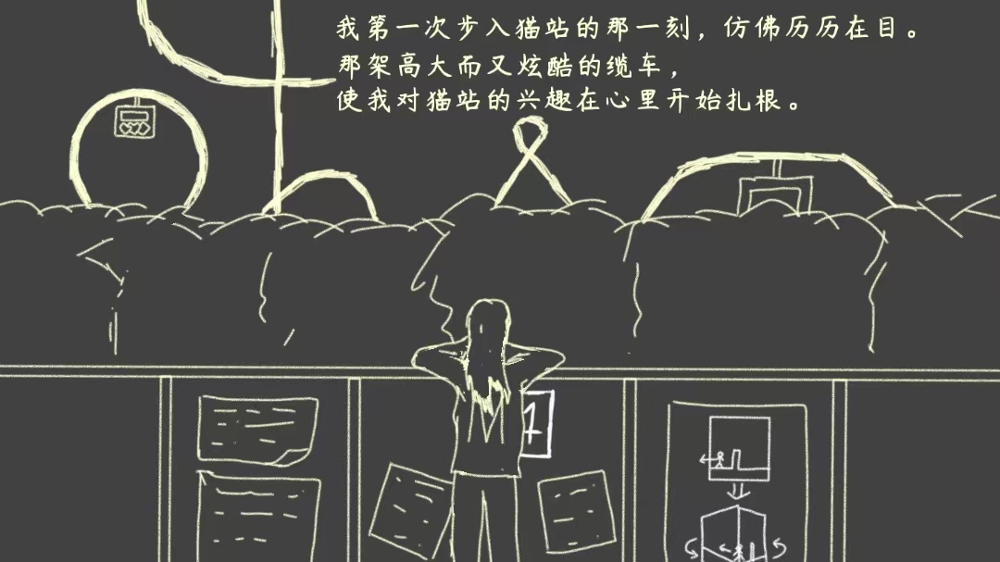
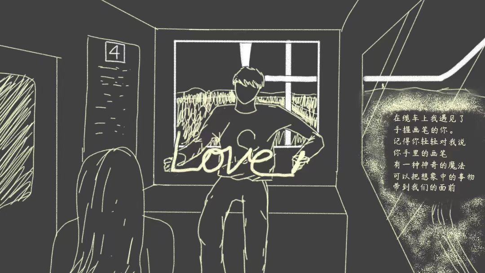
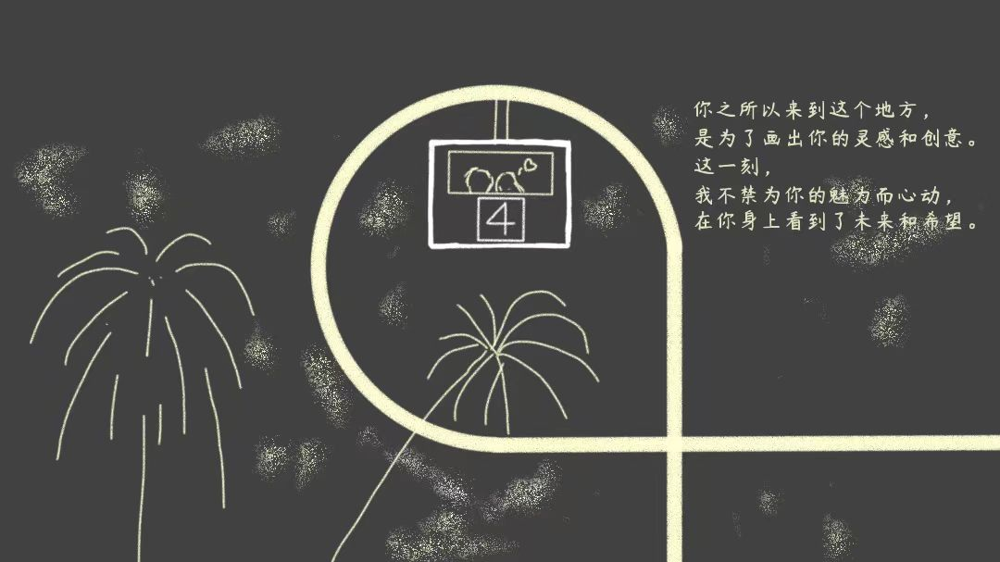
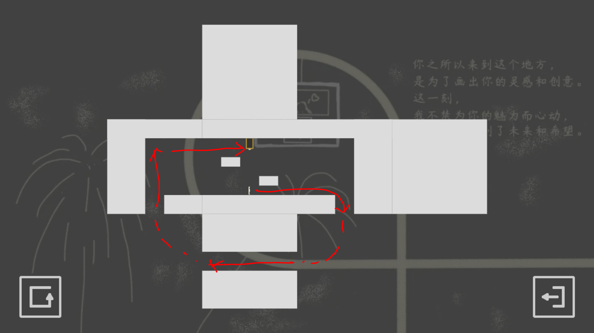

|  | 第1关你……你好？你是来这个地方找我的吗？ 如果你玩过跑酷游戏，你就知道， 用方向键或WASD键进门就行了。 |
过关攻略（0次旋转）： 进门即可通关 |
|
|  | 第2关我在还有记忆的时候， 印象最深的是一个叫猫站的地方。 这是一个游戏制作平台。 不知情的人还以为这是宠物店呢！ 它曾充满着互帮互助、友好祥和的气息， 也是我过去的唯一欢乐源泉。 |
过关攻略（0次旋转）： 跳过岩浆，进门通关 （长按可以跳更高） |
|
|  | 第3关我第一次步入猫站的那一刻，仿佛历历在目。 那座高大而又炫酷的缆车， 使我对猫站的兴趣在心里开始扎根。 （《几何缆车》是作者Simplay在猫站创作的第一个作品，后因反响不好而取消发布） |
过关攻略（4次旋转）： 往左走，走到边缘可旋转立方体。 旋转立方体是本游戏的核心玩法。 沿立方体表面绕路到达另一侧，即可进门通关。 |
|
|  | 第4关在缆车上我遇见了 手握画笔的你。 记得你轻轻对我说， 你手里的画笔 有一种神奇的魔法 可以把想象中的事物 带到我们的面前 （纯画笔游戏是Simplay的创作风格） |
过关攻略（4次旋转）： 跳进中间的通道，左右移动避开岩浆，绕立方体一周后到达右侧进门通关。 各位玩过心跳水立方吗（） |
|
|  | 第5关你之所以来到这个地方， 是为了画出你的灵感与创意。 这一刻， 我不禁为你的魅力而心动， 在你身上看到了未来和希望。 |
过关攻略（4次旋转）： 为了进入倒立在天花板上的门，你需要借助两侧的通道调转重力的方向。 通过旋转立方体改变重力，是这个游戏过关的核心技巧。  |
|